How to use StoreBox
Five short tutorials, each a few taps long. Every screenshot is from the real app on an iPhone.
- 1. Create a box
- 2. Add items with an AI photo scan
- 3. Print or share a QR label
- 4. Find anything with Search
- 5. Scan a label to open a box
Watch it in 40 seconds
Create a box, take one photo, let AI list what is inside, make a QR label, then search every box for one thing.
Prefer to read? The steps are below.
1. Create a box
A “box” is any container: a tote, a bin, a drawer or a shelf.
- On Home, tap the round + button at the bottom.
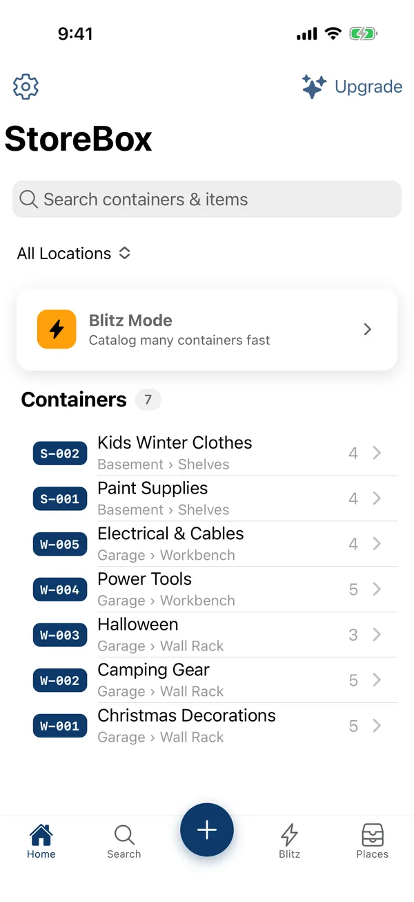
- Type a name. Pick a place and a room if you like (for example Garage › Workbench). The ID, like W-006, is filled in for you.
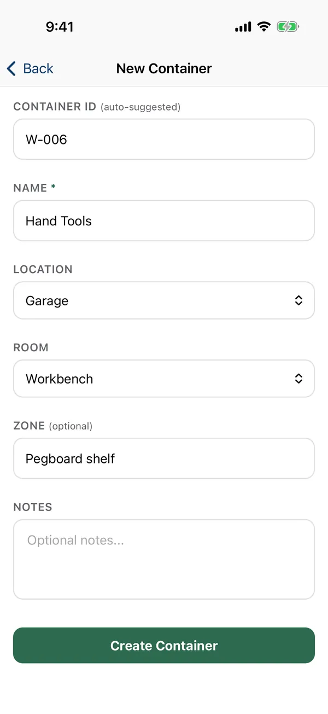
- Tap Create Container. Your new box opens, ready for items.
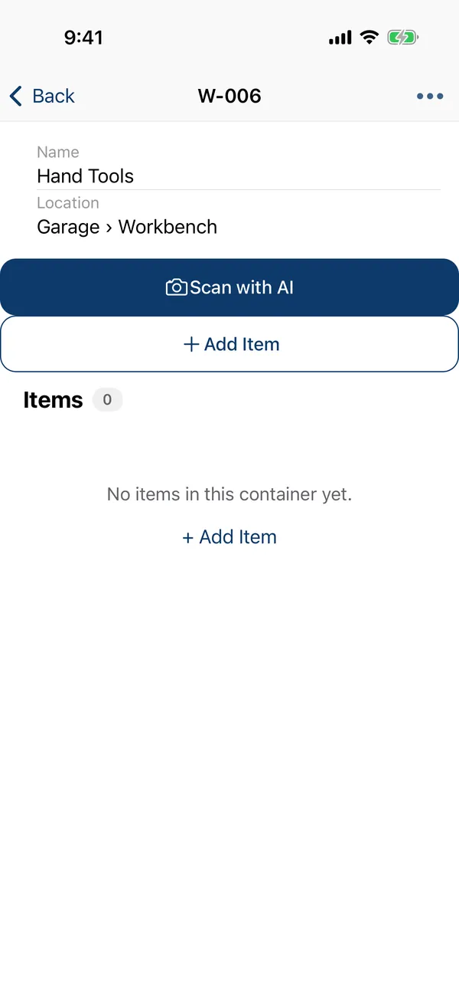
2. Add items with an AI photo scan
Open the box, take one photo, and StoreBox lists what it sees. You choose what to keep.
- In the box, tap Scan with AI and take a photo of the contents. Then tap Analyze 1 photo.
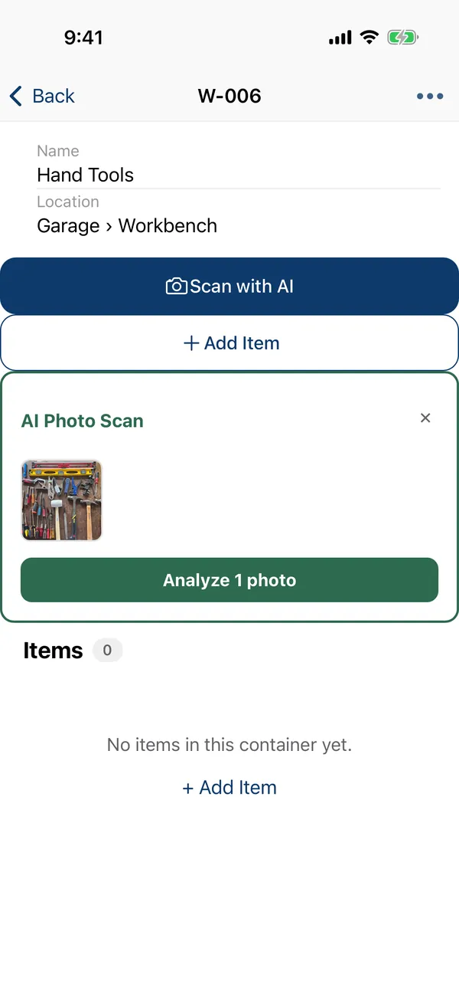
- In a few seconds you get a list of items with a confidence bar. Uncheck anything that is wrong.
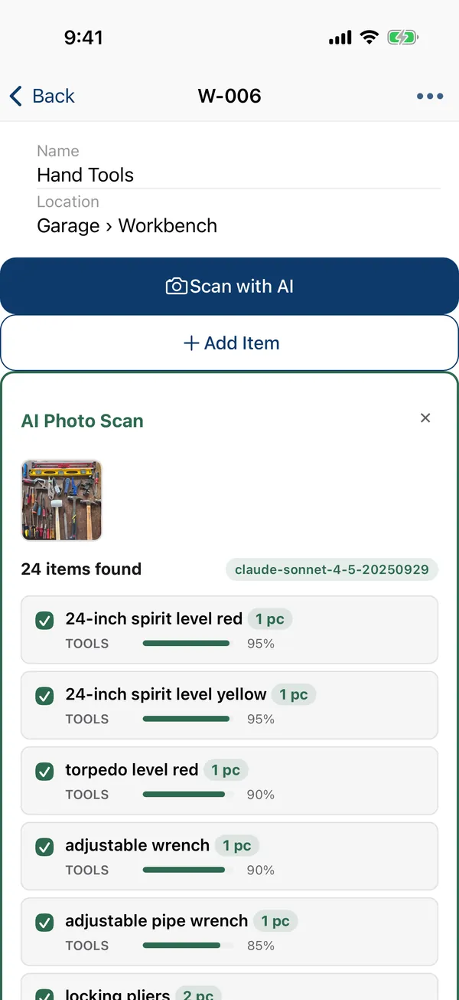
- Scroll to the end of the list and tap Add … Selected. The items are now in the box, each with its quantity.
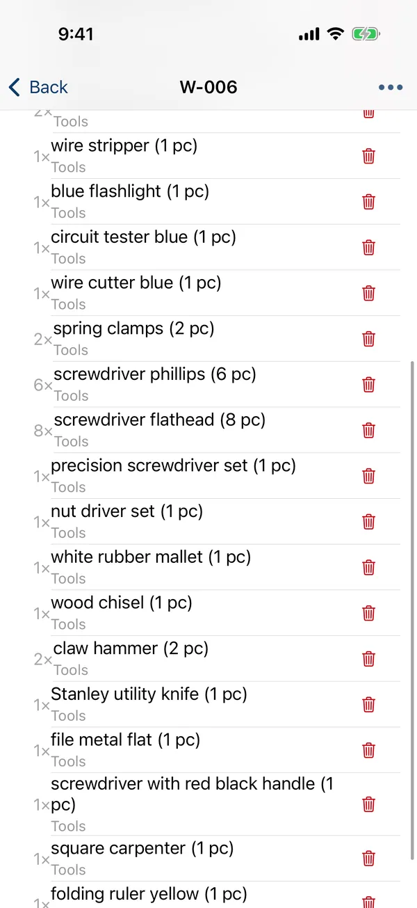
Tip: No photo needed? Tap Add Item and type it in. Your first scans are free; after that the AI scan is a paid add-on. Typing items in is always free.
3. Print or share a QR label
Stick a label on the outside so anyone can see what is inside without opening it.
- In the box, tap ··· (top right), then QR Label.
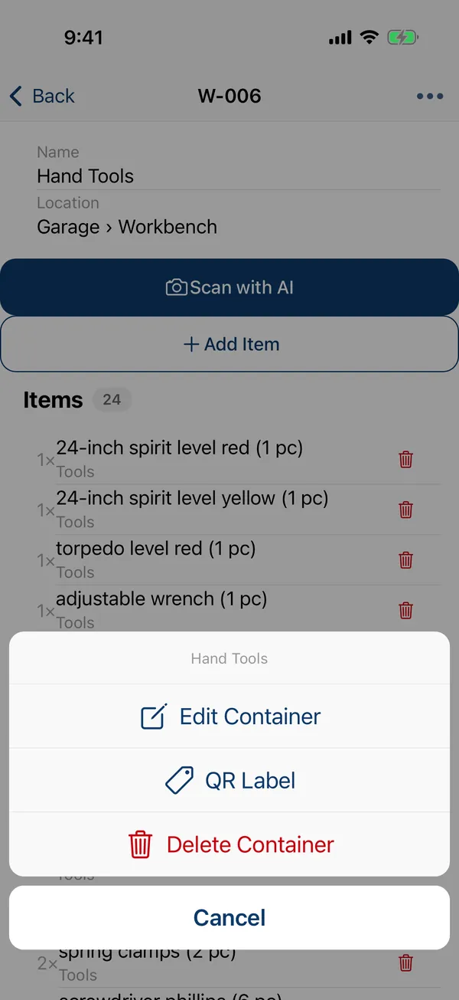
- You see the label: ID, QR code, name, place and item count. Tap Share / Print Label.
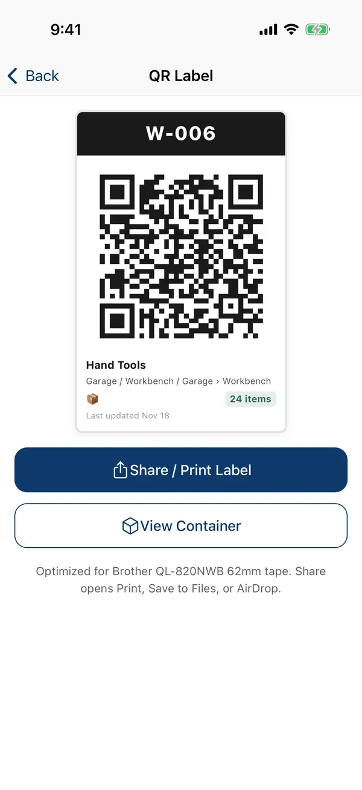
- Choose Print, Save Image, AirDrop or any app. The label is sized for 62 mm label tape (Brother QL-820NWB) and also prints on paper.
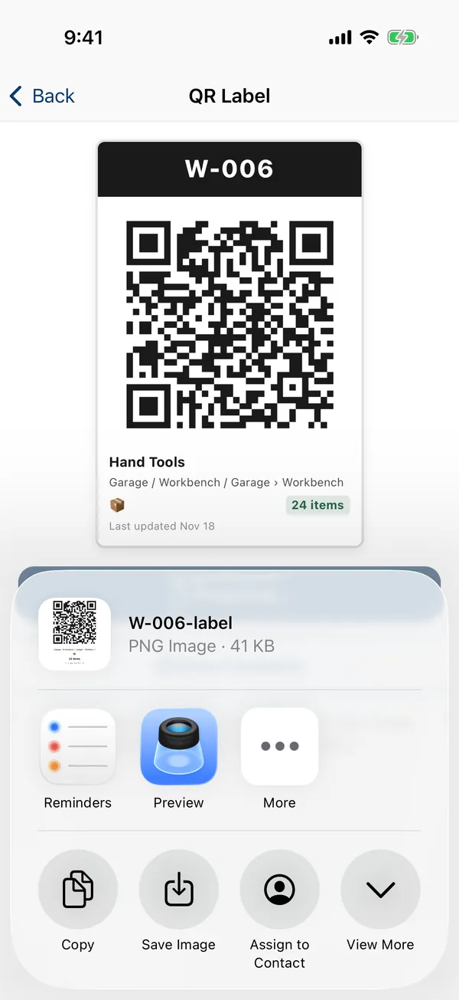
4. Find anything with Search
Forgot which tote has the lights? Search looks in every box at once.
- Tap Search in the bottom bar (or use the search field on Home) and type a word, for example “lights”.
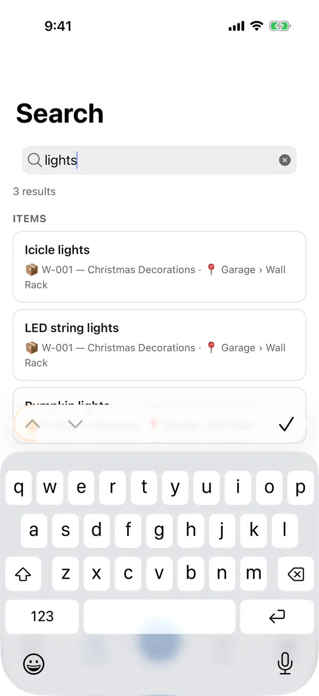
- Results come from every box. Each one shows the box ID and where the box lives. Tap a result to open that box.
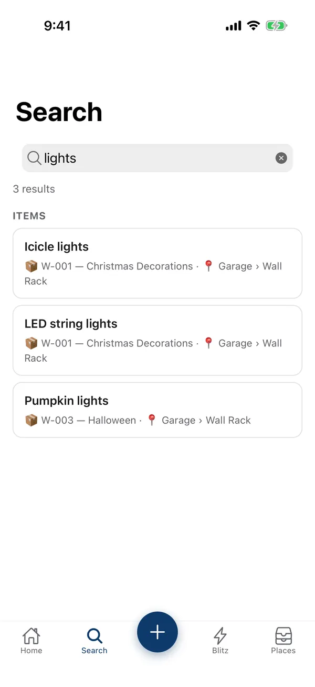
- Prefer to browse? The Places tab groups your boxes by building and room.
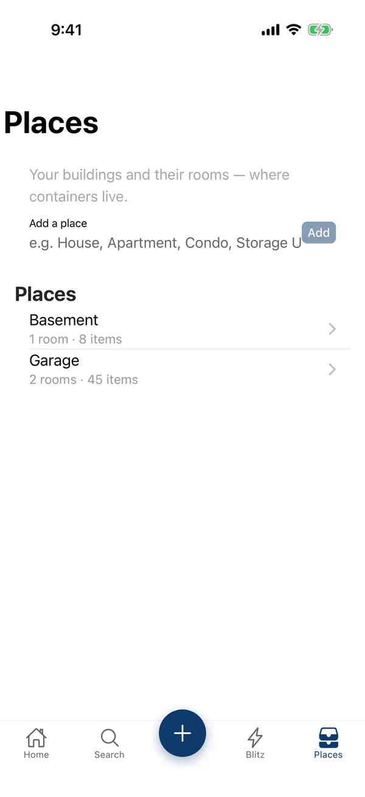
Tip: Set up places and rooms any time in the Places tab: type a name, tap Add, then open the place to add rooms.
5. Scan a label to open a box
This is the payoff: point your phone at a box and see what is inside.
- Open the iPhone Camera app and point it at the QR label on the box.
- Tap the StoreBox banner that appears. StoreBox opens that box with its full item list.
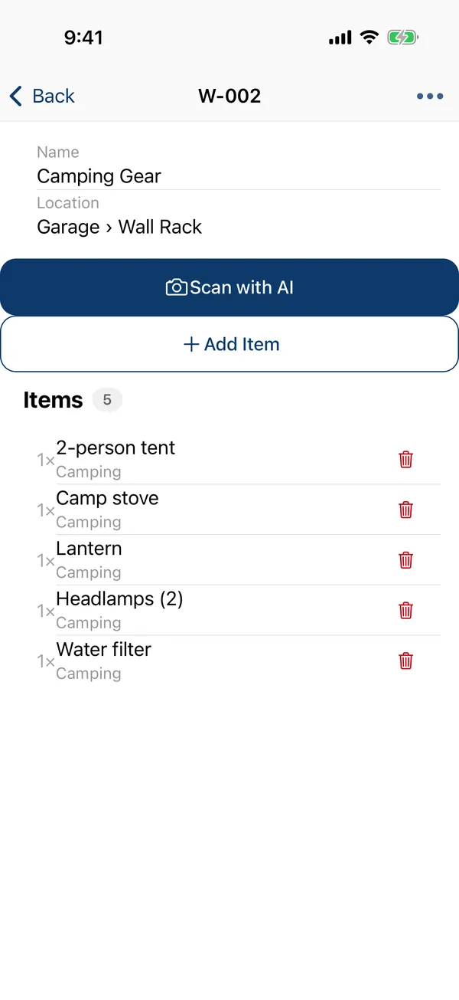
We need your help
StoreBox is built by a small independent team. If you like it, please leave a review on the App Store.
Write a reviewStill stuck? See Support or email support@getstorebox.app.
Demo data only. Tool photo in the scan example: “Table of hand tools”, Wikimedia Commons, CC0.